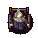
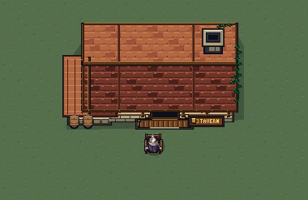

Native Aseprite motion: quiet breathing on a fixed chair and a restrained invitation. Each view repeats at its authored timing. Left is native 38×38, right is 4× nearest.


Composition preview only; runtime placement and gameplay remain owned by the engine.